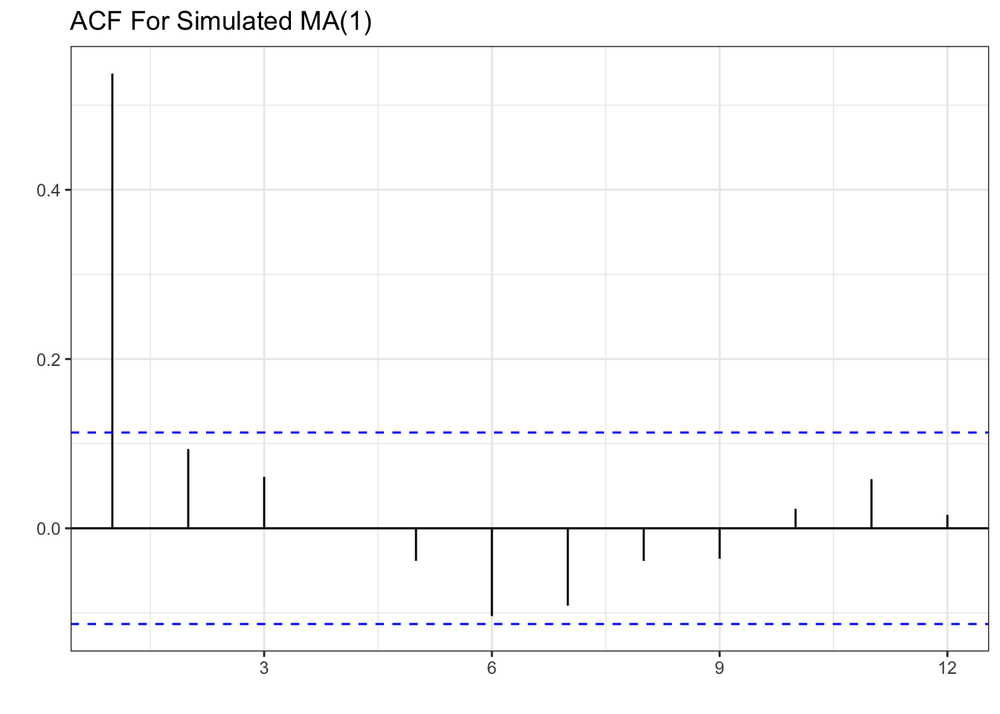
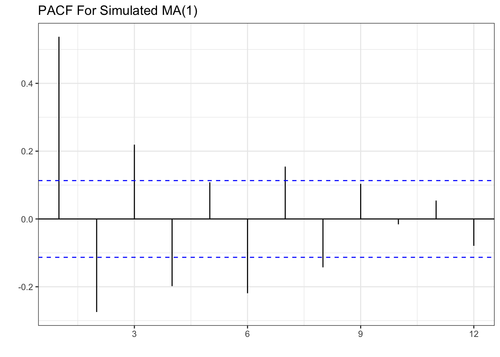
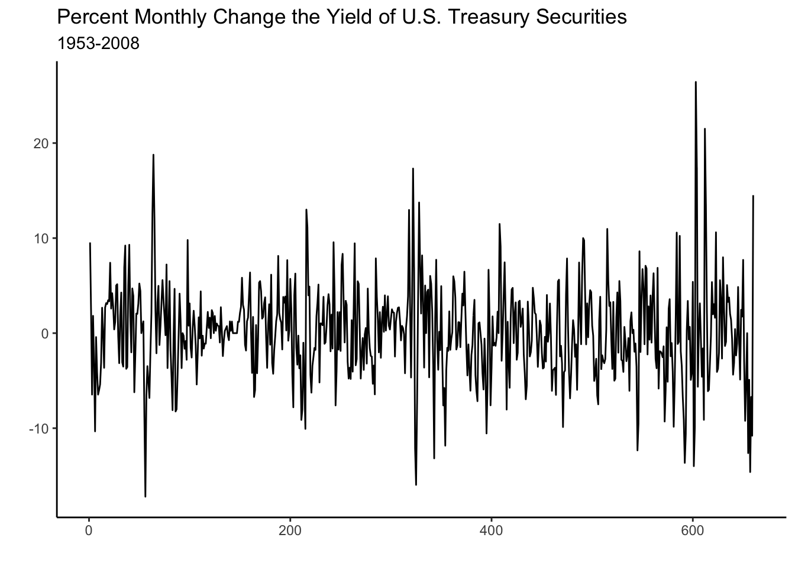
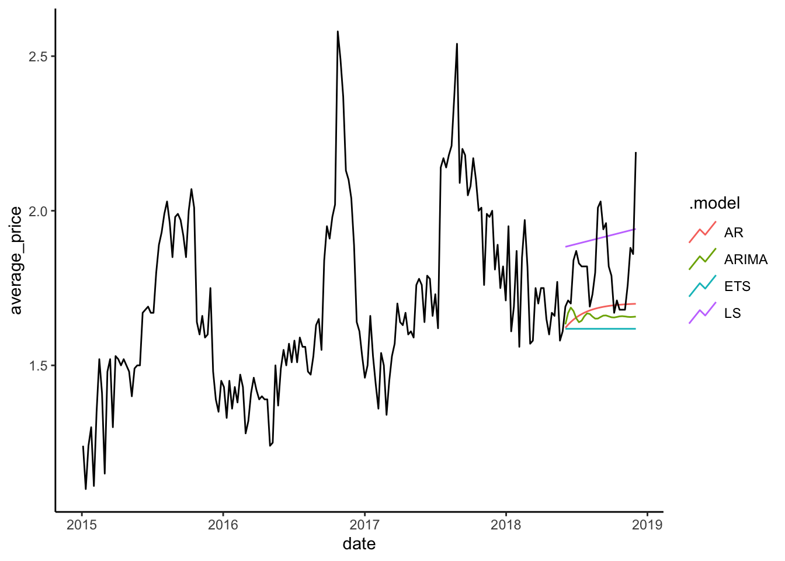
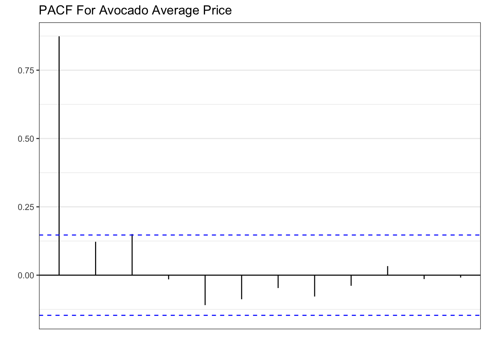
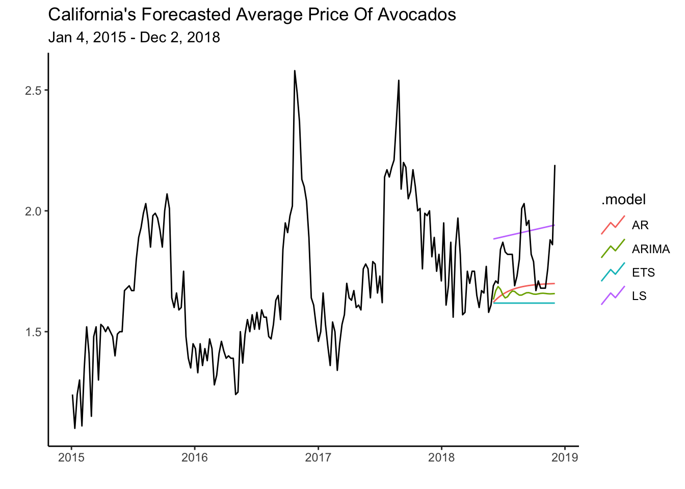

library(fpp3)
set.seed(10)
wn<-tsibble(x=rnorm(100),period=seq(1:100),index=period)7 ARIMA
This section will introduce essential ideas and metrics to analyze time series further. Concepts such as white noise, stationarity, autocorrelation, and partial autocorrelation form the building blocks of one of time series most recognized models–the ARIMA model. The section then applies the AR(1), MA(1), and generalized ARIMA models.
7.1 Preliminaries
White Noise
In time series, white noise refers to a sequence of random data points that have no correlation to each other. This process is used as a benchmark for other types of time series data that exhibit patterns or trends. By comparing a series with the white noise process, we can verify if the series has systematic components that can be modeled (i.e., if there is any signal).
We can generate a white noise process by using the normal distribution with a mean of zero and a constant variance. Below we create a tsibble with the simulated data.
We can now use the autoplot() function to observe the white noise process.
wn %>% autoplot(x) + theme_classic() +
labs(title="White Noise Process",
subtitle="Mean=0 and Standard Deviation=1",
x="",y="") +
geom_hline(yintercept = 0, col="blue", lwd=1, linetype="dashed",
alpha=0.4)
A very unpredictable and ragged pattern is shown in the graph above. The series behaves erratically but fluctuates around a mean of zero and keeps a standard deviation of one. Given the unpredictability of the white noise process, the best one can do is to describe it by its mean and standard deviation.
Stationarity
A time series is said to be stationary if its statistical properties do not change over time. In other words, a stationary time series has a constant mean, variance, and auto-covariance, regardless of the time at which the series is observed. An example of a stationary process is the white noise process introduced above.
Many time series models, including the ARIMA model, require a stationary time series. These models make predictions about future values based on past values, and the statistical properties of the past values are used to inform these predictions. If the time series’ statistical properties change over time, then the models may not work well, as the assumptions underlying them would not be met.
In general, before modeling and forecasting, we will check whether the series is stationary (i.e., has no trend and is homoskedastic). To eliminate the trend in the series we will use the first difference of the series. We can do this in R by using the difference() function. For example consider Tesla’s quarterly vehicle deliveries.

Deliveries have been on an upward trend as the company is currently scaling its production, and demand is strong. This series is not stationary since it crosses the mean (blue line) once and never revisits it. That is, the mean is not constant and changes with time. It is possible to make the series stationary by finding differences. Below is the graph of the first difference.
deliveries %>%
as_tsibble(index=period, regular=T) %>% autoplot(difference(deliveries)) + theme_classic() +
labs(title="Change In Tesla's Vehicle Deliveries",
subtitle = "Q1 2016 - Q4 2022",x="",y="") +
geom_hline(yintercept = mean(difference(deliveries$deliveries), na.rm = TRUE), col="blue", linetype="dashed", lwd=1, alpha=0.4)
The series now fluctuates closer to the mean, but unlike the white noise process behaves less erratic. You will notice that in some periods the change in deliveries from quarter to quarter is high. For example, following the lows at the beginning of the year, deliveries seem to increase sharply. There seems to be correlations between the quarters (time dependencies).
Aonother pattern shown in the graph above is heteroskedasticity (increasing variance), The variance of the series seems to be low from the period of 2016-2018 while significantly higher for the period after. To normalize the variance of the series we can conduct a Box-Cox transformation.
lambda <- deliveries %>% as_tsibble(index=period, regular=T) %>%
features(deliveries, features = guerrero) %>% pull(lambda_guerrero)
deliveries %>% as_tsibble(index=period, regular=T) %>%
autoplot(box_cox(difference(deliveries), lambda)) +
labs(y = "")+ theme_classic() +
labs(title="Box-Cox Transformation of Tesla's Vehicle Deliveries",
subtitle = "Q1 2016 - Q4 2022",x="",y="")
The transformation has made the series a bit more homoskedastic (variance is more uniform) than the series without the transformation. It is important to note that both transformations (differencing and box-cox) can be undone by using an inverse function. We can always return the series to its original form.
A couple of statistical features used to determine the stationarity of a series are the unitroot_kpss and unitroot_ndiffs. In general, a low p-value allows us to reject the null of hypothesis of stationarity. Below, we test the features with the non-stationary Tesla deliveries.
deliveries %>% as_tsibble(index=period, regular=T) %>%
features(deliveries, features = c(unitroot_kpss, unitroot_ndiffs)) | Stationarity Tests | ||
| kpss_stat | kpss_pvalue | ndiffs |
|---|---|---|
| 0.947 | 0.010 | 2 |
The test reports a p-value of 0.01 when it is below 0.01 and 0.1 when it is above 0.1. Hence, the p-value confirms that Tesla deliveries are non-stationary and that two differences are required to make the data stationary. Two differences might be required as Tesla’s deliveries seem to be growing exponentially.
The autocorrelation function
Autocorrelations are essential in time series analysis since they indicate the degree of similarity between a time series and a lagged version of itself (a previous period). They help identify patterns and trends in the data allowing us to predict future values of the series. For example, suppose a time series exhibits a strong positive autocorrelation at a lag of \(k\) periods. In such a case, the value at time \(t+k\) will likely be similar to that at time \(t\). Formally we can write the autocorrelation as:
Let’s illustrate the use of autocorrelations with an example. This time let’s inspect personal income growth in the state of California. Below we load the data and create the train and test sets.
library(fpp3)
library(tidyverse)
PI<-read_csv("https://jagelves.github.io/Data/PersonalIncome.csv")
PI %>% as_tsibble(index=Date) %>%
filter_index(1970~2005) -> PI_train
PI %>% as_tsibble(index=Date) %>%
filter_index(2006~2021) -> PI_testThe autocorrelation function can now be constructed by using the ACF() function and plotting it with autoplot() as shown below.
PI_train %>%
ACF(lag_max = 12,PI_Growth) %>%
autoplot() + theme_bw() + labs(x="", y="",
title="ACF Personal Income Growth in California")
The plot shows that the correlation of the series with its first lag is strongest. That is, positive income growth in the previous period correlates with positive income growth in the current period. The plot also shows continuous decay in the strength of the correlation as the lags get larger. A positive income growth two or three periods ago still positively influences the current period’s income growth, but less than the immediate previous period. The blue lines determine which autocorrelations are statistically different from zero (significant) at the 5% level. As you can see, lags 1-4 are positively correlated with the series and are statistically significant.
On the other hand, a white noise process is expected to show no correlation with its lags since the series is constructed from independent draws from a normal distribution with constant variance. Previous periods do not affect the current or future periods. Below you can see the autocorrelation function of the white noise process.
wn %>% ACF(x) %>% autoplot() + theme_bw() + labs(x="", y="ACF") +
labs(x="", y="", title="ACF White Noise Process")
Interestingly, lag 14 shows a positive correlation with the series. It is important to note that correlations can happen by chance even if we construct the series from a random process.
The partial autocorrelation function
As with the ACF, the partial autocorrelation function (PACF) summarizes the relationships between a series and its lags. However, the relationships of intervening lags are removed. The sample partial autocorrelation at lag \(k\) is the correlation that results after removing the effect of any correlations due to the terms at shorter lags.
Formally speaking, when we calculate the autocorrelation between \(y_t\) and \(y_{t+k}\), information flows from \(t\) to \(t+k\), so that indirectly \(\rho_k\) (the correlation) accounts for the contribution of lags between \(t\) and \(t+k\). A series of regressions would allow us to calculate the PACF. Luckily, R calculates these easily for us as shown below:
PI_train %>%
PACF(lag_max = 12,PI_Growth) %>%
autoplot() + theme_bw() + labs(x="", y="PACF") +
labs(x="", y="", title="PACF Personal Income Growth In California")
The graph shows that the series has a strong correlation only with its first lag. Specifically, lag 2, 3, and 4 seemed to have been correlated with the series (see ACF), but this was mainly because of the influence of lag 1.
Let’s inspect the white noise process once more to confirm that there are no patterns.
wn %>% PACF(x) %>% autoplot() + theme_bw() + labs(x="", y="PACF") +
labs(x="", y="", title="PACF White Noise Process")
In sum, white noise processes are unpredictable and we can only describe them by their mean and standard deviation. Series that have patterns in their ACF or PACF can be modeled using ARIMA. Below we illustrate how to model Personal Income Growth in California with an AR(1) model.
7.2 The AR(1) model
In the previous section, we established that the growth of personal income in California has a decaying ACF and a single significant spike (at lag 1) in the PACF. These patterns can be generated with an AR(1) model. Specifically, the AR(1) model is of the form:
where \(c\) is a constant, \(\phi\) is the lag coefficient, \(y_{t-1}\) is the first lag of \(y\), and \(\epsilon\) is random error. Since this model uses only the first lag of the series as the independent variable, it is known as AR(1). The AR model can be extended to include more lags of \(y\), and in general, it would be called an \(AR(p)\) model, where \(p\) is the largest lag included. Below we simulate some data based on the AR(1) model.
y<-c(0)
phi<-0.7
const<-1
nrep<-100
for (i in 2:nrep){
y[i]=const+phi*y[i-1]+rnorm(1,0,0.5)
}Now we can use the data generated to see what the ACF looks like for a AR(1) process. This will allow us to visually identify the process.
tsibble(y=y,period=seq(1,length(y)),index=period) %>% ACF(lag_max = 12, y) %>% autoplot()+theme_bw()+
labs(x="", y="", title="ACF For Simulated AR(1) phi=0.7, c=1")
Note the resemblance of the ACF of the simulated data to that of the personal income growth. There is a decaying ACF described by a strong correlation of lag one and subsequent lower correlations as the lags get larger. Now let’s take a look at the PACF.
tsibble(y=y,period=seq(1,length(y)),index=period) %>% PACF(lag_max = 12, y) %>% autoplot()+theme_bw()+labs(x="",y="PACF", title="PACF For Simulated AR(1) phi=0.7, c=1")
Once again, we can see the resemblance if we compare the PACF to the one in personal income growth. Specifically, there is one significant spike at lag one, and all other partial autocorrelations are not statistically different from zero. The patterns in the ACF and PACF confirm that we can model personal income growth with an AR(1) process.
Modeling and Residuals
Let’s model personal income growth using the AR(1) model. We’ll also estimate a Least Squares model to compare. Recall, that we can estimate these models by using the model() function and retrieve the coefficients with the coef() function. We will use the AR() function along with the order() function set to one, to model the AR(1) process.
PI_fit<-PI_train %>%
model(AR1 = AR(PI_Growth ~ order(1)),
LS = TSLM(PI_Growth ~ trend()))
coef(PI_fit)| Model Coefficients For PI Growth | |||||
| .model | term | estimate | std.error | statistic | p.value |
|---|---|---|---|---|---|
| AR1 | constant | 1.80 | 0.82 | 2.19 | 0.04 |
| AR1 | ar1 | 0.70 | 0.12 | 5.80 | 0.00 |
| LS | (Intercept) | 9.19 | 0.80 | 11.50 | 0.00 |
| LS | trend() | −0.17 | 0.04 | −4.43 | 0.00 |
The estimated coefficient (\(\phi=0.7\)) for the AR(1) process is equal the one used in our simulation. However, the estimated constant is 1.8. If we changed the constant to 1.8, the simulation would resemble the personal income growth data better. That is, the AR model selects the constant and lag coefficient (\(\phi\)) such that it fits the data.
If the AR(1) process correctly describes the series, the errors should behave like white noise. If the model picks up all of the systemic variation, only random error should be left. To inspect the errors we can use the augment() function along with the object that contains the model (PI_fit). The ACF of the error is displayed below.
errors_PI<-augment(PI_fit)
errors_PI %>% select(.resid) %>% ACF(.resid) %>%
autoplot() + theme_bw()
The ACF of the errors from the AR(1) model resemble white noise. This suggests that we have correctly identified the systematic component of the series. In other words, there is nothing left to model since the errors are entirely random. This is not the case for the LS model since we still observe some significant spikes (lag 1 and lag 13) in the ACF function.
errors_PI %>% select(.resid) %>% PACF(.resid) %>%
autoplot() + theme_bw()
The PACF once again shows no pattern for the residuals of the AR(1) model and some significant lags for the LS model. This further confirms that the AR(1) model correctly identifies the data generating process in the time series.
Model Selection
We can choose between these choose between the LS and AR(1) models by looking at the AIC, AICc, or BIC.
glance(PI_fit) %>% arrange(AICc) %>% select(.model:BIC)| Model Fit Measures | ||||
| .model | sigma2 | AIC | AICc | BIC |
|---|---|---|---|---|
| AR1 | 4.30 | −20.25 | −19.89 | −17.09 |
| LS | 5.51 | 65.35 | 66.10 | 70.10 |
Here we note that the AR(1) model performs better in all of the metrics as they are significantly lower than those for the LS. The accuracy on the test set shown below, once more confirms that the AR(1) model performs better than the LS model.
PI_fc<-PI_fit %>% forecast(new_data = PI_test)
PI_fc %>% accuracy(PI_test) | Accuracy Measures | |||||||||
| .model | .type | ME | RMSE | MAE | MPE | MAPE | MASE | RMSSE | ACF1 |
|---|---|---|---|---|---|---|---|---|---|
| AR1 | Test | −1.51 | 3.47 | 2.45 | −115.69 | 156.61 | NaN | NaN | 0.33 |
| LS | Test | 2.60 | 4.43 | 3.87 | 22.50 | 106.69 | NaN | NaN | 0.48 |
The graph below shows the test set along with the forecast of the AR(1) model. Prediction confidence intervals are shown to highlight the uncertainty of the prediction. The blue line indicates the mean of the predictions which are assumed to follow a normal distribution.
PI_fc %>% filter(.model=="AR1") %>% autoplot(level=95) + theme_classic() +
autolayer(PI_train, PI_Growth) +
autolayer(PI_test, PI_Growth) +
labs(title="Personal Income Growth AR(1) Forecast Accuracy",
subtitle="1970-2021", y="",x="")
7.3 The MA(1) model
The moving average (MA) process models time series by using past errors (random shocks). Formally,
where \(\mu\) is the mean of the time series, and \(\epsilon\) is the error term. As with the AR model, further error term lags could be included in the MA. An MA process with highest lag of \(q\) is called an MA(q) process. The MA process assumes that the current observation of a time series is a linear combination of the weighted sum of past error terms. The error terms capture the unpredictable and random fluctuations in the time series that are not accounted for by the AR model. Below we simulate an MA(1) process and generate the ACF and PACF plots.
set.seed(13)
e_t<-rnorm(300,0,0.5)
y_t=2+0.95*dplyr::lag(e_t)+e_t
tsibble(y=y_t,period=seq(1,length(y_t)),index=period) %>% ACF(lag_max = 12, y) %>% autoplot()+theme_bw()+
labs(x="", y="", title="ACF For Simulated MA(1)")
tsibble(y=y_t,period=seq(1,length(y_t)),index=period) %>% PACF(lag_max = 12, y) %>% autoplot()+theme_bw()+
labs(x="", y="", title="PACF For Simulated MA(1)")

The pattern shown is one significant spike in the first lag of the ACF, and a decaying PACF as lags get larger. This is the opposite of the AR(1) process where we had a decaying ACF and one spike in the PACF.
U.S. Treasury Example
Consider the percent monthly change the yield of U.S. treasury securities (TCM5Y). Below is the plot of the series.
treasury<-read_csv("https://jagelves.github.io/Data/treasury.csv")
treasury %>% mutate(period=1:length(OBS)) -> treasury
as_tsibble(treasury, index = period) %>%
autoplot() + theme_classic() +
labs(title="Percent Monthly Change the Yield of U.S. Treasury Securities",
subtitle="1953-2008",
x="", y="")
Interestingly, the graph above looks like white noise. A very ragged and unpredictable pattern that fluctuates around a mean of approximately zero. Let’s take a look at the ACF and PACF.
as_tsibble(treasury, index = period) %>%
ACF(lag_max = 12, changetreasury) %>%
autoplot()+ theme_bw() +
labs(x="", y="", title="ACF for TCM5Y")
as_tsibble(treasury, index = period) %>%
PACF(lag_max = 12, changetreasury) %>%
autoplot()+ theme_bw() +
labs(x="", y="", title="PACF for TCM5Y")
When comparing with the MA(1) simulated values, the ACF of TCM5Y reflects the same pattern. One spike, and all other lags not significantly different from zero in the ACF. The PACF doesn’t exactly replicate the one from the simulation, but the pattern created is the same. Mainly, there is a decaying PACF, a large lag 1 partial autocorrelation, followed by smaller ones until they all are insignificant. These correlations additionally alternate in sign. As with the AR(1) process, we can estimate the model, check that the errors are white noise, and then forecast.
7.4 ARIMA
The ARIMA model is based on stationary, AR, and MA processes. ARIMA stands for AutoRegressive Integrated Moving Average.
- AutoRegressive (AR): The “AR” part means that the future values of a time series depend on its own past values. If today’s value is high, tomorrow’s value is likely to be high too.
- Integrated (I): The “I” part is about making the time series stationary. It means we take the differences between consecutive observations to remove trends or seasonality.
- Moving Average (MA): The “MA” part means that the future values also depend on the past prediction errors (residuals). If the model predicted a value that was too high or too low in the past, it will try to correct that in the future predictions.
ARIMA combines these three components to forecast future values in a time series by considering its own past, removing trends, and accounting for past errors in predictions. In terms of notation, an ARIMA(1,1,2), will find the first difference of the series, and estimate the model with an AR(1) and MA(2) component. Below we estimate the ARIMA model.
Revisiting Chilango’s Restaurant
Let’s apply the ARIMA model to the avocado data. The code below loads the data and creates the training and test set.
cali<-read_csv("https://jagelves.github.io/Data/CaliforniaAvocado.csv")
cali %>%
as_tsibble(key=geography,index=date,regular=T) %>%
filter_index("2015-01-04"~"2018-12-02") -> cali
cali %>%
as_tsibble(key=geography,index=date,regular=T) %>%
filter_index("2015-01-04"~"2018-06-02") -> calits_train
cali %>%
as_tsibble(key=geography,
index=date, regular=T) %>%
filter_index("2018-06-02"~"2018-12-02") -> calits_testNext, we will estimate the LS, ETS, AR, and ARIMA models. We will allow an algorithm to specify the parameters of both the ETS and ARIMA models by using the ETS() and ARIMA() functions and omitting arguments. Within the ARIMA() function we will set the approximation argument to FALSE so that the search for the best ARIMA model is exhaustive.
fit <- model(calits_train,ETS=ETS(average_price),
ARIMA=ARIMA(average_price,approximation = F),
AR=AR(average_price~order(1)),
LS=TSLM(average_price~trend()))The coefficients for the models can be retrieved by using the tidy() or coef() functions.
fit %>% coef()| Model Coefficients For The Avocado Data | ||||||
| geography | .model | term | estimate | std.error | statistic | p.value |
|---|---|---|---|---|---|---|
| California | ETS | alpha | 0.6461 | NA | NA | NA |
| California | ETS | l[0] | 1.2082 | NA | NA | NA |
| California | ARIMA | ar1 | 0.9220 | 0.1097 | 8.4033 | 0.0000 |
| California | ARIMA | ar2 | −0.7364 | 0.1135 | −6.4873 | 0.0000 |
| California | ARIMA | ma1 | −1.1478 | 0.0807 | −14.2160 | 0.0000 |
| California | ARIMA | ma2 | 0.8490 | 0.0966 | 8.7888 | 0.0000 |
| California | AR | constant | 0.2139 | 0.0605 | 3.5351 | 0.0005 |
| California | AR | ar1 | 0.8743 | 0.0354 | 24.6880 | 0.0000 |
| California | LS | (Intercept) | 1.4856 | 0.0391 | 38.0158 | 0.0000 |
| California | LS | trend() | 0.0022 | 0.0004 | 5.8702 | 0.0000 |
The models suggested by the algorithms are fairly simple. The ETS model suggested is a SES with a smoothing parameter of about \(0.65\). As for the ARIMA model, an ARIMA(2,0,2) process is suggested. Below we plot the ACF and the PACF of the average price of avocados.
calits_train %>% ACF(lag_max=12, average_price) %>%
autoplot()+theme_bw()+
labs(x="", y="", title="ACF For Avocado Average Price")
calits_train %>% PACF(lag_max=12, average_price) %>%
autoplot()+theme_bw()+
labs(x="", y="", title="PACF For Avocado Average Price")

The patterns shown in the plots above are textbook AR(1). Hence, the inclusion of the model in the set of candidates. The code below forecasts the series 27 periods ahead and plots.
fit %>% forecast(h=27) %>% autoplot(level=NULL) +
theme_classic() +
autolayer(cali, average_price) 
Interestingly, it seems like the AR(1) and the LS model perform the best. Let’s confirm by checking the accuracy measures against the test set.
fit %>% forecast(h=27) %>% accuracy(cali)| Model Fit | ||||||||||
| .model | geography | .type | ME | RMSE | MAE | MPE | MAPE | MASE | RMSSE | ACF1 |
|---|---|---|---|---|---|---|---|---|---|---|
| AR | California | Test | 0.14 | 0.18 | 0.14 | 7.07 | 7.40 | 1.40 | 1.32 | 0.51 |
| ARIMA | California | Test | 0.16 | 0.20 | 0.16 | 8.20 | 8.20 | 1.55 | 1.46 | 0.51 |
| ETS | California | Test | 0.20 | 0.23 | 0.20 | 10.39 | 10.39 | 1.95 | 1.69 | 0.50 |
| LS | California | Test | −0.10 | 0.16 | 0.14 | −5.88 | 7.78 | 1.37 | 1.14 | 0.52 |
What is not shown in the metrics is how the forecast’s errors are created. The LS model overestimates the test data, while the AR(1) underestimates it. One could imagine combining the forecasts of these models to obtain an even better data forecast. We can create an ensemble by calculating a simple average of the two predictions.
7.5 Readings
Hyndman (2021) Chapter 9 (ARIMA Models).
7.6 Leasons Learned
In this module you have been introduced to ARIMA model. Particularly you have learned to:
Apply autocorrelations, partial autocorrelations, stationarity and white noise to model time series.
Identify the AR(1) and MA(1) processes using the ACF and PACF.
Model the ARIMA process using the
ARIMA()function.Provide forecasts of the ARIMA process in R.